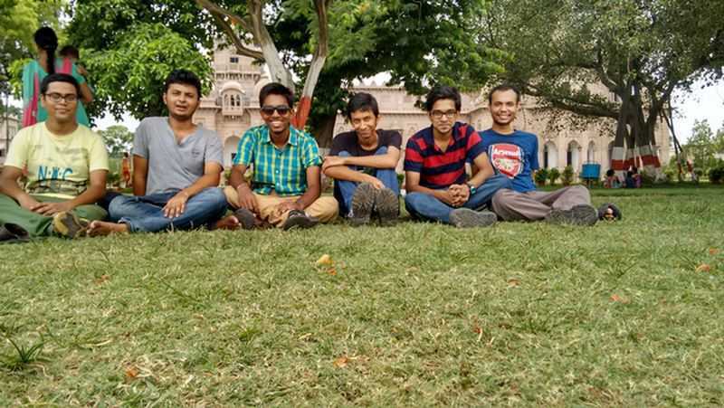
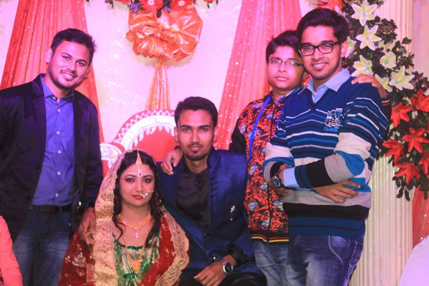
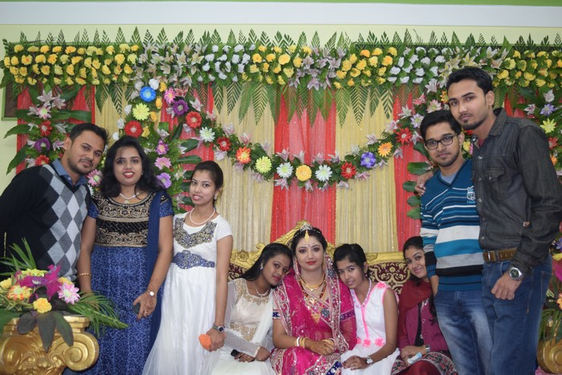
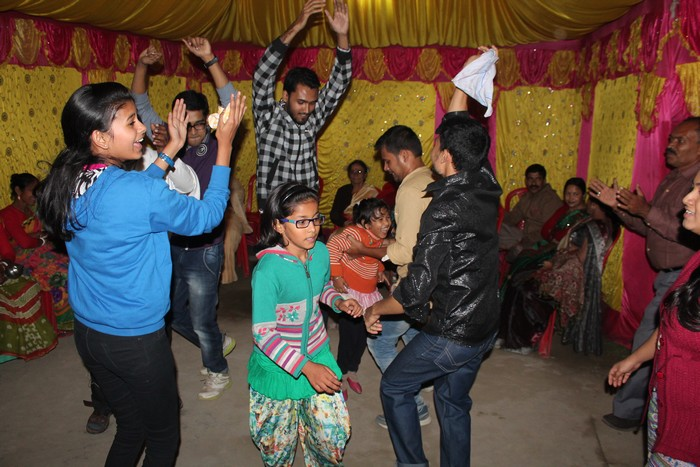
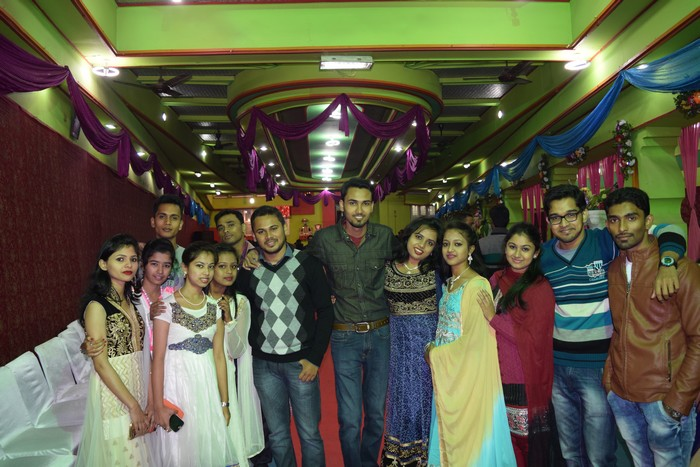
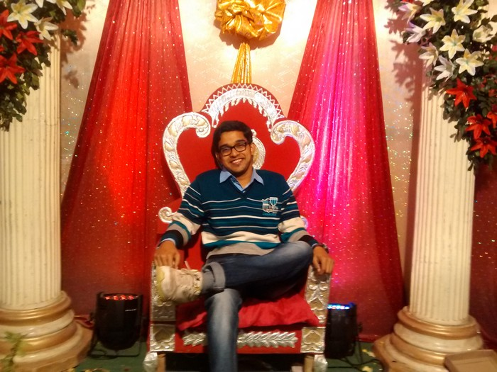
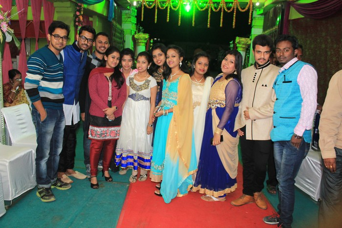
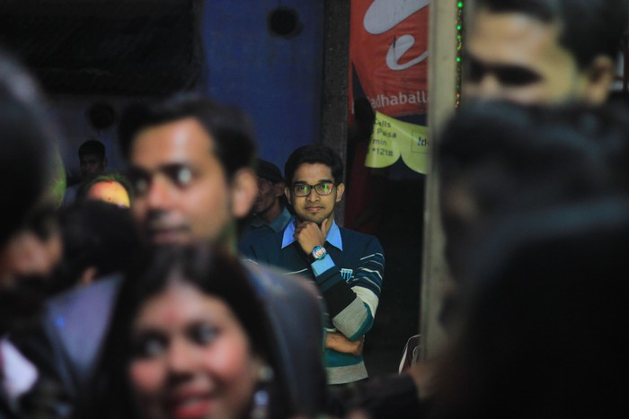

{% extends "blog.html" %}
{% block blogpost %}
Summing up 2015!
31st December'2015
2015 was full of ups and downs for me. lets dig a little deeper !
The entire year can be divided into 4 sets of time period:
JANUARY TO APRIL (4th Semester): This was a pretty cool sem, there wasn't much pressure regardng academics, assignments etc.(obviously I always screw up gpa and that hardly bothers me). I got my time to do my personal favorites stuffs ie coding. Tried my hands in algorithms, participated in competitive coding.
SUMMER VACATION (MAY TO JULY): What a period this was . It was pretty awesome except that I lost my Huawei Honor holly. We(nits friends) decided to opt for Android training in kolkata. We stayed there for about a month and it was a ultimate period of fun. Although I lost my phone just after 5 days, we went to kolkata. It was a big incident for me. I still think wish I took care of it in a safer way. Whatever, I, Subham, Aditya, Gourav, Debu , partha ended up having a time to remember, we stayed in the same PG, did various sorts of "naughty" activities. It was fun indeed. From Nico park to Belur math, we made sure we visit each and every special place of kolkata. And Yeah we had kilos of mangoes each day, it was so cheap and tasty. The bond of friendship between us cemented strongly.

{from left : partha, subham, gourav, debu, me(sunny), aditya}
AUGUST TO NOVEMBER : 5th Semester started, and it was as usual again, ignoring the academic, screwing cgpa and concentrating on coding. I Made my entry into top 1500 in Codechef long, under 1000 in Codechef Lunchtime. Me and Aditya teamed up(codermonks) participated in TCS codevita'2015 and ended up having rank 144 among 60,000 teams. However, failing to qualify in ICPC amritapuri regionals was a big setback for us. It took somedays for us to get over the bad hangover.
DECEMBER : December was one of the best month of 2015 for me. A great ending for a not so great year. I was fascinated with python. And started building a python app to scrap details of user of spoj.com(you can find the links in the project section). Learnt about GUI programming and it was fun. Apart that from, December was quite busy as I got involved in managing the marriage ceremony of my friend's (kohinoor) sister's wedding. It was awesome to have such kind of experience. With Kohinoor and Sunandan, I enjoyed incredibly. There were series of ceremonies during marriage taking 7 to 10 days. These 10 days were full of fun, management, food, styling, flirting, friendship and awesomeness. We were together for the 10 days and It turned out to be a experience of life-time.

(Sunandan, Bride, Kohinoor, Sunny)


full on dance mode

The entire youth-gang

Trying the Groom's chair :P

Another click of the Gang

THE FOCUS BOY!
Phenomenal wedding it was! Hell of enjoyment!
Overall 2015 gave me my aim , my path , my goal, my aspiration. 2015 taught me a lot of things, kicked me sometime, picked me sometime.It was a mix of sweet and Bitter . Hoping 2016 will give me strength and power to follow my goal !
Wishing You a great upcoming 2016. Happy New Year !
{% endblock %}
{% block fbcomment %}
...
{% endblock %}